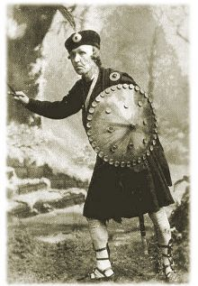

I’m as mad as hell and I’m not going to take it any more.
It really gets my goat that my famous great-grandfather, William T. McGonagall, is routinely pilloried as the World’s Worst Poet. Assuredly there is an untold story — or at least one too little told, or too little considered — concerning Sir William Topaz McGonagall, Knight of the Burmese Order of the White Elephant, the self-styled Poet and Tragedian. (And I use the term “self-styled” in full awareness of its potential double meaning.)
This matter of his real history, as against the blether that is almost universally accepted without question, touches at an acute angle on the McGonagall family honour, which has been besmirched for more than a century by the popular, condescending view of his work. So I make no apology for stating my conviction: that William Topaz McGonagall has been too long maligned and misunderstood by the world at large.
Very few of the people around the English-speaking world who chuckle over his lines ever consider that there may have been more to this man than has been assumed. They see him simply as the fool who thought himself a genius, a fool who was blind or deaf to the comical badness of his lines — the faulty metre, the incongruous diction, the bathos, the often ludicrously contrived rhymes.
But wasn’t all this done a wee bit too well to have been accidental? Is it really likely that so much humorous effect could be produced without the intention and awareness of its creator? If you are among the many who consider McGonagall’s work to be a marvel of “bad verse”, has it really never occurred to you that it just may have been designed as such? Has your mind never been troubled, however fleetingly, by a shadow of suspicion that perhaps, after all, the joke is on us?
Well, it ought to be have occurred to you and your mind ought to be sorely troubled. This standard theory of McGonagall as an accidental genius of comedy is a weak and lazy theory which runs against common sense and known fact. His life as well as his work provides ample evidence that William McGonagall — whose Poetic Gems had by the 1980s become Scotland’s biggest-selling book ever — was in fact not the simple naif that he seemed, but a consummate comic actor and parodist.
The son of Irish immigrants, he spent much of his life in Dundee. Unhappily the name of that city is inescapably associated with a species of cake bearing a heavy burden of dried fruit, nuts and whatnot, rather than, as it ought to be, with its most distinguished son. It is a pleasant enough city and the people are certainly more cheerful and amiable than the Aberdonians, for example. But I digress. In Dundee, my namesake learned from his father the trade, or craft, of handloom weaving. And there he also acted on the amateur stage in Shakespeare productions. At various times he played Macbeth, Hamlet, Othello, and Richard III. Later, after his sudden irresistible call to poetry at fifty-two years of age, he entertained audiences regularly by alternating recitations from Shakespeare and his own work. The latter he also sold in the streets in “broadsheet” form.
son. It is a pleasant enough city and the people are certainly more cheerful and amiable than the Aberdonians, for example. But I digress. In Dundee, my namesake learned from his father the trade, or craft, of handloom weaving. And there he also acted on the amateur stage in Shakespeare productions. At various times he played Macbeth, Hamlet, Othello, and Richard III. Later, after his sudden irresistible call to poetry at fifty-two years of age, he entertained audiences regularly by alternating recitations from Shakespeare and his own work. The latter he also sold in the streets in “broadsheet” form.
We must at least wonder how a man who could master the text of Hamlet or Macbeth (and even play deadpan comical variations on them to much hilarity) could at the same time exhibit the amusing faulty literacy and naïvety of his poems and autobiographical writings and be, as is often alleged, totally devoid of humour.
I am entirely convinced that McGonagall was only pretending to be the naïve and semi-literate fool of his writings. That he sometimes clowned in the stage roles just goes to show he actually had a strong sense of humour which he could not, or would not, always hide.
Some of his contemporaries have admitted that they suspected him of “fooling them to the top of his bent, because of the profit attached”.
And is it not suspicious that his poetic epiphany at fifty-two occurred just at a time when he was finding it harder and harder to make a living at his trade? Mechanisation had all but killed handloom weaving. He was well motivated to try something different — and what more likely course for him than to exploit his stage experience in some manner?
But look carefully at his writings, too. Concerning his stage career he says this in his Autobiography.
I must inform ye that as early as ten years of age I was very fond of reading Shakespeare’s Penny Plays (Vicker’s edition), and from them I received great knowledge regarding the histrionic art.
Is he giving us a clue there, with a broad wink, that the Poet and Tragedian is a persona, a theatrical performance? He goes on as follows.
The plays or tragedies I studied most were Macbeth, Hamlet, Richard III, and Othello, the Moor of Venice, and these four characters I have impersonated in my time. During my stay in Dundee my first appearance on the stage was in the character of Macbeth in Mr Giles’ Penny Theatre, Lindsay Street, Dundee, to an overflowing and crowded audience, and I received unbounded applause. I was called before the curtain several times during the performance, and I remember the actors of the company felt very jealous owing to me getting the general applause, and several were as bold as tell me so; and when it came to the combat scene betwixt me and Macduff the actor who was playing Macduff against my Macbeth tried to spoil me in the combat by telling me to cut it short, so as the audience, in his opinion, would say it was a poor combat, but I was too cute for him, guessing his motive for it. I continued the combat until he were fairly exhausted, and until there was one old gentleman in the audience cried out, “Well done, McGonagall! Walk into him!” And so I did until he was in a great rage, and stamped his foot, and cried out, “Fool! Why don’t you fall?” And when I did fall the cry was “McGonagall! McGonagall! Bring him out! Bring him out!” until I had to come before the curtain and receive an ovation from the audience.
“I was too cute for him...” And, it may well be, too cute for most of us to grasp the conscious nature of the artistry in his “bad poetry”. Of which we should now look at a couple of examples.
In The Railway Bridge of the Silvery Tay, written when the bridge (then the longest in the world) was newly built, McGonagall came close to predicting the coming calamity when he wrote:
Beautiful Railway Bridge of the Silvery Tay!
I hope that God will protect all passengers
By night and by day,
And that no accident will befall them while crossing
The Bridge of the Silvery Tay,
For that would be most awful to be seen
Near by Dundee and the Magdalen Green.
Little more than a year later, the central part of the bridge was blown down in a storm while a train was crossing, and all the passengers were killed. McGonagall followed up with what would eventually become his most famous poem, The Tay Bridge Disaster, which opens like this:
Beautiful Railway Bridge of the Silv’ry Tay!
Alas! I am very sorry to say
That ninety lives have been taken away
On the last Sabbath day of 1879,
Which will be remember’d for a very long time.
and closes with these wise words:
Oh! ill-fated Bridge of the Silv’ry Tay,
I must now conclude my lay
By telling the world fearlessly without the least dismay,
That your central girders would not have given way,
At least many sensible men do say,
Had they been supported on each side with buttresses,
At least many sensible men confesses,
For the stronger we our houses do build,
The less chance we have of being killed.
I am in no doubt but that the comic effect here was purposely wrought, and that anger lurks beneath the poem’s surface. Remember that around the time the bridge was opened there was some public disquiet concerning the apparently flimsy nature of the central girders, which indeed had already been blown over once in a gale during the construction work. McGonagall had alluded to this weakness in the opening stanza of his first Tay Bridge poem:
And your central girders, which seem to the eye
To be almost towering to the sky.
and also in the later lines quoted above.
He was well aware that he had got people’s attention and was known (he had made sure of it) as “The Bard of the Tay”. When a new, stronger Tay Bridge was built alongside the ruins of the old one, he rose to the occasion with An Address to the New Tay Bridge, which includes these lines:
“Oh! it was a most gorgeous sight to be seen,
Numerous foreign magnates were there for to see the Queen;
And to the vast multitude there of women and men,
Her Majesty for two hours showed herself to them.”
The apparently careless suggestion of royal indecent exposure is hilarious, but standard McGonagall theory would have us believe it to be so by accident. I remember years ago a UK television commentator reporting on an occasion when the Duke of Edinburgh’s helicopter landed in Hyde Park in London. “There’s Prince Phillip,” he said, “flashing the royal chopper in the park.” (I am unsure whether the slang expression “flashing the chopper” is known outside the UK, but I expect its meaning can be guessed.) That was certainly not an accidental double-entendre, and neither, I say, was McGonagall’s. Yet the commentator was considered a witty fellow while McGonagall is considered a fool. Why? Because he played the part of a fool so well, and most of us are easily fooled by someone who panders to our vanity by making us feel superior.
I am by no means the first to propose this explanation. It is cogently explored by Gord Bambrick in a comprehensive essay which shows with many examples how cleverly McGonagall used his poetry to subvert the apparent message of its naïve surface, thus ironically undermining the privileged and the powerful (from the Queen down) whom he pretended to flatter. I say with Bambrick that W. T. McGonagall was a social satirist, a conscious artist of the absurd, and a virtuoso deadpan performer. Indeed I go further and suggest that he may have been Scotland’s greatest comedian.
Regarding the poetry and its metre, many people mistakenly believe that this form of “bad verse” (as judged from the viewpoint of a literary elite) was unique to McGonagall. It was not. Most of his poems were in the long-established tradition of broadside balladry — a broadside ballad being essentially a formulaic composition, something like a newspaper article in verse, sold in the steets. And not “literary” verse but an oral kind of verse designed for recitation. The rhythm of a broadside poem might seem awkward on the page; but the roots of the form do not lie in literary poetry but in oral balladry and folksong, with their more elastic metrics. Broadsides, like folksongs, sound far better than they look. (Later, Ogden Nash in his long-line pieces would use something similar to the broadside metre.)
In truth McGonagall’s originality lay, not in his choice of form, but in his marrying it to a ridiculous inflated persona and using the combination to comic and subversive effect.
One of his most clearly subversive poems is The Christmas Goose, which parodies the moral lesson of Dickens’ A Christmas Carol. Any expectation of the villain at last relenting or repenting is brutally thwarted in the poem’s close:
No matter how the poor are clothed,
Or if they starve at home,
We’ll drink our wine, and eat our goose
Aye, and pick it to the bone.
Postmodernist and deconstructivist theory has declared authorial intention to be irrelevant since “the text” exists and is what it is, regardless. How ironic, then, that people claim to find the Poet and Tragedian’s work addictively funny and yet they deny him the accolade of great comedian on the grounds that he (as they so desperately want to believe) didn’t intend to be funny. Oh, for goodness’ sake! The man was trying to make a living; and it is surely clear that he decided his best chances lay in attracting attention by eccenticity of style and personal presentation. In his public recitations from his own work and from Shakespeare, he was known for appearing in outlandish costumes and for carrying on apparently without noticing when audiences jeered and catcalled or pelted him with vegetables, fruit and eggs.
Some accounts by his contemporaries reveal that, after such performances, he had sometimes been spotted leaving the theatre with the ghost of a satiric smile playing about his mouth, beneath the shadow of his egg-spattered hat.
Continue to believe, if you will, that McGonagall really was essentially deluded, self-important and absurd, and as deaf and blind to insult as he appeared to be. I shall continue to believe that those were the qualities of a character he played to the hilt; that he deliberately created and maintained the ludicrous, conceited persona of the public “Poet and Tragedian” much as, in our present age, Barry Humphries has created and maintained the persona of Dame Edna Everage. Likewise, Sacha Baron Cohen has created and exploited the character of “Borat”, who in the recent eponymous movie asks a car salesman, “Do you please hhev a babe magnet to sell me for this car?” Do we confuse Dame Edna, “Housewife and Megastar”, with her rather intellectual male creator? Do we say, “What an idiot that Borat is!” or do we think Sacha Baron Cohen is rather an amusing fellow, and a clever one?
McGonagall today would be be on all the chat shows. But in his time the world was unready for such a performer. The joke certainly seems to have backfired on him somewhat. I think he overestimated his audience’s capacity to appreciate subtlety. He played the fool so long and well, and folk have got so thoroughly used to enjoying their feeling of superiority along with their McGonagall (having the penny and the bun), that nobody wants to think he maybe wasn’t really a fool after all. Certainly if he hoped to make a good living out of playing the unwittingly comical Poet and Tragedian, he was disappointed.
But I almost forgot, I was going to say something about my great-grandfather’s stay in New York, as a nod to the expatriate theme. In truth I’m not sure if he really took the New York trip or if it was a fiction invented as an episode for his autobiography. Do read that chapter and make up your own mind. I am unaware of any supporting evidence for his having made the trip, and I certainly don’t put it past him to have invented it.
At any rate, according to his account, around 1888 he came into a little extra money and decided to try his poems and recitations in New York. Of course “the great poet McGonagall” was much in demand as an entertainer on board the steamer, in both directions. But he didn’t have a great time of it in New York. First there was a theatrical ban in force “against all British artists” so he couldn’t get even one “music hall” (vaudeville) engagement. He fared no better in attempts to sell his broadside poems on the streets; the New York public refused to buy poems bearing the Royal coat of arms (along with McGonagall’s claim of the Queen’s patronage) and McGonagall refused to follow a pragmatic local’s advice to cut the coat of arms off the broadsheets. He then had to take up the offer of a Dundee friend to “fetch him back” — in other words pay his fare home if he got into difficulty. The bard had trouble, too, in accepting the looser observance of the Sabbath in New York, and fell out over that with his Scottish friends living there. But you should read the whole episode in his own words, rather than my summary. In any case I see I have already gone over my word limit for unpaid writing.
So I leave you to ponder. Can we read the Poet and Tragedian’s works and credibly, or credulously, find only the surface fool? Was this Don Quixote of poetry truly a fool through and through, a character without an author, a creature of chance, a freak of nature? Or, shall we look deeper and discern a Cervantes, too cute by half, with a satiric smile part-hidden, part-revealed?